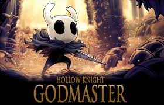
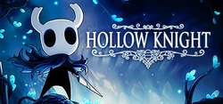
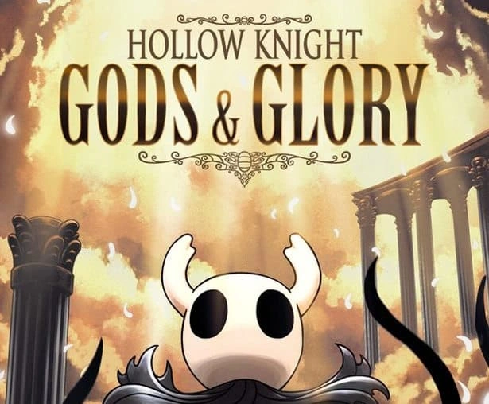
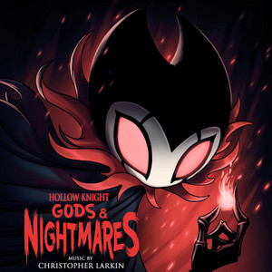

La page de la boutique Hollow Knight : Silksong est en ligne !
Devenez la princesse chevalier
Incarnez Hornet, princesse protectrice d'Hallownest, et partez à l'aventure dans un royaume inédit,
hanté par la soie et les chants. Capturée et emmenée en terre inconnue, Hornet doit affronter des ennemis et
résoudre des mystères tout en entreprenant un périlleux pèlerinage jusqu'au sommet du royaume.
Hollow Knight : Silksong est le deuxième jeu de Team Cherry (c'est nous !) et la véritable suite de Hollow Knight.
Et quel défi de garder le secret ! Cachée dans les coulisses, la gigantesque aventure de Hornet s'est développée (et ne cesse de s'agrandir !)
depuis plus d'un an, les premières pièces du puzzle ayant été assemblées juste après la sortie initiale de Hollow Knight sur PC le 24 février 2017.
Presque dès le départ, l'aventure de Hornet devait se dérouler dans un nouveau monde, mais en y travaillant, elle est rapidement devenue trop vaste et
trop originale pour rester un DLC, comme prévu initialement. Nous savons que cela rallonge un peu l'attente, mais nous pensons que le monde final et
inédit que vous découvrirez en vaut vraiment la peine.
Rendez-vous sur notre nouvelle page Steam et ajoutez-la à votre liste de souhaits dès aujourd'hui !

Mise à jour de contenu!
Hollow Knight : Godmaster est disponible dès maintenant pour tous les joueurs !
Ça y est, les amis ! Le quatrième pack de contenu gratuit de Hollow Knight, Godmaster, est désormais disponible pour tous les joueurs sur PC, Mac et Linux.
Hollow Knight : Godmaster est le chapitre final de l'histoire du Chevalier et le plus gros pack de contenu à ce jour !
Rencontrez de nouveaux personnages, accomplissez de nouvelles quêtes, partez à la recherche de nouveaux secrets et, surtout,
préparez-vous à une bataille épique pour prendre définitivement votre place parmi les dieux d'Hallownest !
Pour fêter sa sortie, Hollow Knight est en promotion ! Si vous (ou vos meilleurs amis) hésitiez encore à vous lancer dans HK, c'est le moment idéal !

Mise à jour de contenu!
Hollow Knight : Lifeblood bénéficie de plusieurs mois d'améliorations en coulisses, et ce n'est que le début ! Le pack de contenu gratuit 3 :
Gods & Glory est en cours de développement et s'annonce comme le plus conséquent à ce jour ! Et ce n'est que le début !
Caractéristiques :
- Un tout nouveau boss accompagné d'une nouvelle musique composée par Chris Larkin !
- Un boss a été considérablement amélioré. Un véritable défi vous attend !
- Les marqueurs de carte personnalisés sont disponibles ! Avis aux cartographes !
- Des bonus ont été ajoutés au menu « Extras » !
- Nombreux ajustements et équilibrages du jeu.
- Désormais jouable en japonais.
- Corrections de bugs divers.
- Effets sonores et voix supplémentaires.
- Optimisations et améliorations des performances.

Hollow Knight : Gods & Glory annoncé !
Voici l'événement majeur. Prenez place parmi les dieux pour une célébration épique de la gloire d'Hallownest et le chapitre final du voyage du chevalier.
Lets jump right into the details:
- New Character and Quest - The Godseeker arrives (and your romance options expand). Track down this disturbing yet alluring being, break her chains and aid her in an ancient duty.
- New Boss Fights - Hallownest's greatest warriors raise their blades. Prepare yourself for giant new boss fights against the ultimate foes. Each new battle intertwines with the Godseeker's quest. No specifics on how that'll happen, but it may not be as you expect!
- New Game Mode - Hollow Knight receives a third game mode. This ones been long requested and is a classic for the genre. Complete the Gods & Glory story to unlock the new mode.
- New Music - Christopher Larkin is going all out for Hollow Knight's final free pack, with new soaring boss tracks and giant remixes of some beloved classics.
- Glorify Charms - Prove yourself and uncover a whole new depth to your charm collection.
- Of course, other surprises will be hiding about the place, but we can't spoil all the fun!
- Gods and Glory can be accessed at any point in your Hollow Knight journey. Prepare to ascend, Early 2018, free for all players!

Joyeux Halloween ! La troupe Grimm est arrivée !
L'arrivée du Clan Écarlate!Allumez la Lanterne du Cauchemar et participez à un rituel sinistre. Affrontez de terrifiants nouveaux ennemis et faites-vous de puissants alliés ! Et bien sûr, quelques surprises vous attendent !
Le contenu de la Troupe Grimm est disponible gratuitement pour tous les joueurs de Hollow Knight v1.2.1.1 (vérifiez le numéro de version dans le menu principal). Les joueurs Steam recevront la mise à jour automatiquement.
Les marqueurs de carte personnalisés seront disponibles ultérieurement pour permettre des tests et des améliorations. Ils seront inclus dans un prochain patch mineur !
Langues supplémentaires
Grâce à nos talentueux traducteurs, vous pouvez désormais jouer à Hollow Knight en russe et en portugais brésilien ! Ces deux langues resteront en version bêta pendant quelques semaines, au cas où de petits problèmes d'affichage surviendraient.
Note pour les utilisateurs Mac et Linux
En raison de nombreux ajouts et corrections de dernière minute (nous sommes vraiment à la bourre !), les versions Mac et Linux de la Troupe Grimm seront déployées dans les prochains jours.
La Troupe Grimm est le deuxième des trois packs de contenu gratuits pour Hollow Knight. Le troisième pack est un contenu unique et conséquent, alors restez à l'affût ! Nous vous le dévoilerons bientôt !

Hollow Knight - Hidden Dreams est maintenant disponible !
Hidden Dreams est disponible !
Ça y est ! Affrontez deux des plus grands guerriers d'Hallownest, découvrez un poste de chasse au cerf caché et explorez Hallownest d'une toute nouvelle façon
grâce aux Portes des Rêves ! Nous avons même glissé quelques petites surprises pour tenir les joueurs aguerris en haleine.
Le contenu de Rêves Cachés est inclus dans Hollow Knight v1.1.1.4 (vérifiez le numéro de version dans le menu principal). Les joueurs Steam recevront la mise à jour automatiquement.
Langue italienne ajoutée :
L'italien est désormais disponible dans la v1.1.1.4. Si vous préférez jouer en italien, c'est le moment !
Note importante pour les utilisateurs Mac :
En raison d'un bug de dernière minute spécifique à Mac, la mise à jour de Rêves Cachés sera légèrement retardée. Nous vous prions de nous excuser pour ce désagrément et la version Mac sera disponible très prochainement.
Rêves Cachés est le premier des trois packs de contenu gratuits pour Hollow Knight. Les suivants vous réservent bien d'autres surprises ! Restez à l'affût pour plus d'informations et de révélations prochainement !